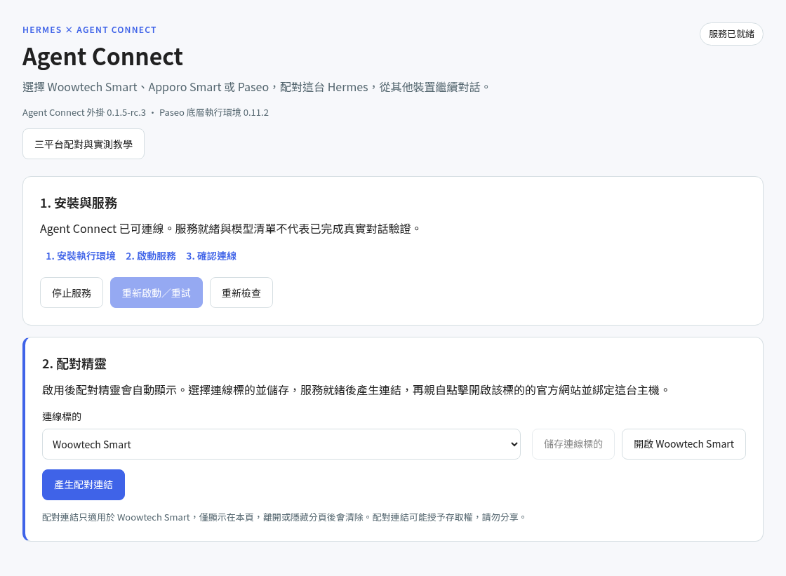

三個平台都是用來操作遠端 Hermes 的網頁 App。你需要先有一台可用的 Hermes 主機；直接打開平台首頁，不會自動連上公司的主機。
- Hermes Dashboard 網址與登入方式由管理者另行提供。這份教學不包含公司服務帳號或配對邀請。
- 這次要測的平台與主機名稱確認你測的是指定主機。多人共用主機時，先協調平台切換時間。
- 可使用的模型與測試工作目錄請管理者確認模型已登入且有額度，並提供可選的專用測試 project／目錄。
- 同一個瀏覽器的兩個分頁一個開 Dashboard，另一個開所選平台。先用一般瀏覽模式；新瀏覽器或無痕視窗通常需要重新配對。
介面名稱與版本怎麼看？rc.3 的選單與頁首叫 Agent Connect；rc.2 仍叫 Paseo，但已包含三個平台選項。外掛版本 0.1.5-rc.3 與底層執行環境 Paseo 0.11.2 是不同的版本號。網址仍可能以 /paseo 結尾。
Dashboard 沒有看到 Agent Connect？
先重新整理 Dashboard，確認外掛已安裝並啟用。若仍顯示 Paseo，先進入該頁查看「2. 配對精靈」是否有三個標的。沒有下拉選單、外掛 API 尚未載入或版本仍是 rc.9 時，請管理者確認更新與 Dashboard 重載。只重載 Dashboard 不等於切換連線標的。
選擇下方平台，教學、檢查清單與回報會一起切換。三個平台各自配對；同一條邀請只適用於產生它的標的。
登入 Hermes Dashboard，開啟 Agent Connect
若你看到的選單仍叫 Paseo，進入同一個頁面。確認「1. 安裝與服務」顯示服務已就緒；尚未安裝時等待準備完成，已手動停止時按「恢復服務」。
在「2. 配對精靈」選擇 Woowtech Smart
展開「連線標的」選單，選 Woowtech Smart，按 儲存連線標的。只在下拉選單選取，還不算儲存。
停止再恢復服務，讓標的生效
若出現「標的已儲存，停止再啟動服務後生效」，先結束進行中的測試對話，按 停止服務，等服務停止，再按 恢復服務。等待服務已就緒且待套用提示消失。如果本來就已套用 Woowtech Smart，無須為配對再重啟。
產生並開啟 Woowtech Smart 配對連結
按 產生配對連結，再按 使用配對連結開啟 Woowtech Smart。新分頁的網域應是 smart.woowtech.io。本節上方的「開啟 Woowtech Smart」只開首頁；首次配對請使用 Dashboard 產生的完整連結。
確認主機並按 Connect／連線
在 Woowtech Smart 的配對視窗核對主機，再按 Connect（中文介面可能顯示「連線」）。等待視窗關閉，並確認主機出現在列表且可連線。邀請用完後，網址中的配對片段通常會被移除。
選擇測試 project，建立 Hermes 對話
首次使用若顯示 No projects yet，按 Add project，選擇管理者提供的工作目錄。接著用 New workspace／新增工作區，選該 project、Hermes、已授權的模型與管理者指定的權限模式。介面若有 Skip setup，可先略過 App 的額外設定，再選這台主機建立工作區。
完成首輪與記憶續聊，再回報結果
照下方「首輪與續聊」傳送兩則測試訊息。看到模型清單或主機已連線，還不能判定模型回覆成功。完成後勾選 Woowtech Smart 的清單並產生回報。
登入 Hermes Dashboard，開啟 Agent Connect
舊選單可能仍叫 Paseo。先確認「1. 安裝與服務」已就緒；尚在安裝時等待完成，已停止時按「恢復服務」。
選擇並儲存 Apporo Smart
在「2. 配對精靈」的「連線標的」選 Apporo Smart，按 儲存連線標的。確認沒有「連線標的尚未儲存」的提示。
停止再恢復，套用新的平台
如果顯示待套用，先結束進行中的測試對話，按 停止服務，等停止完成，再按 恢復服務。等待服務已就緒且待套用提示消失。本來已使用 Apporo Smart 時，不必重做切換。
開啟 Apporo Smart 專用的配對連結
按 產生配對連結，接著按 使用配對連結開啟 Apporo Smart。確認新分頁網域為 smart.apporo.ai。Paseo 或 Woowtech Smart 的舊邀請不能拿來做這次配對。
在 Apporo Smart 確認連線
核對配對視窗中的主機並按 Connect／連線。等視窗關閉，確認主機可連線。若瀏覽器攔截新分頁，回到 Dashboard 親自點擊產生後的配對按鈕。
選擇 project、Hermes 與模型
若顯示 No projects yet，先 Add project 並選管理者提供的測試目錄。使用 New workspace／新增工作區，選這台主機上的 project、Hermes、可用模型與指定權限模式。若有 Skip setup，可先略過額外設定。
實際傳送兩輪訊息
使用下方測試提示，確認首輪回覆及同一對話的記憶續聊。再勾選 Apporo Smart 的清單、產生回報；錯誤請記錄發生步驟與文字。
登入 Hermes Dashboard，進入 Agent Connect
rc.2 的入口仍叫 Paseo。確認服務已就緒；已停止時按「恢復服務」，首次準備執行環境時等待完成。
確認連線標的是 Paseo
在「2. 配對精靈」選 Paseo 並按 儲存連線標的。若目前就是沿用原有 Paseo 設定、沒有待套用，也可以直接產生官方配對連結；有自訂 relay 的主機，請先詢問管理者再儲存標的。
從其他平台切回時，先停止再恢復
若從 Woowtech Smart 或 Apporo Smart 切回，會顯示待套用。先結束進行中的測試對話，按 停止服務，等停止，再按 恢復服務。等待就緒與待套用提示消失；本來就使用 Paseo 時，無須額外重啟。
產生並開啟官方配對連結
按 產生配對連結，再按 使用配對連結開啟 Paseo。確認網域為 app.paseo.sh。單獨開啟官方首頁不會自動連上 Hermes。
確認主機後按 Connect
在 Paseo 的配對視窗核對主機，按 Connect／連線。等待完成，確認主機在列表中且可連線。已配對的瀏覽器通常可直接使用既有主機；新瀏覽器則重新配對。
首次使用先建立 project
看到 No projects yet 時，按 Add project 並選指定的測試工作目錄。接著在 New workspace 選 project、Hermes、已登入且可用的模型及指定模式。不要只停在空白主機列表就判定失敗。
完成首輪與同一對話續聊
使用下方的兩則提示實測。確認模型回覆正確，再勾選 Paseo 的清單並產生回報。首輪成功但新開一段對話不記得代碼，不等同續聊失敗；第二則要送在原對話。

新版 Agent Connect 實際元件的操作示例，使用隔離測試資料；不包含真實主機或配對邀請。按「停止服務」並等候停止後，啟動按鈕才會顯示「恢復服務」。以你當前畫面的服務狀態為準。
配對連結是臨時授權資料請只在你自己的瀏覽器開啟。回報時不要附完整邀請網址、#offer= 後面的內容、帳號憑證或金鑰。需要截圖時，先遮蔽網址列與配對內容。
在平台建立專用測試對話，標題可用「Agent Connect 實測」。使用已授權的模型。這兩輪會消耗模型額度，請依管理者提供的測試範圍執行。
第一輪：讓模型記住一個代碼
請記住本次實測代碼 AC-TEST-7426。不要呼叫工具，也不要讀寫檔案。只回覆「已記住 AC-TEST-7426」。
預期：收到包含 AC-TEST-7426 的有效回覆。你可把數字換成這次測試專用的代碼；第二輪不要再提供答案。
第二輪：在原對話追問
我上一則請你記住的實測代碼是什麼？只回覆代碼，不要呼叫工具。
預期：原對話回覆 AC-TEST-7426（或你改用的代碼）。請勿新開 workspace 或新對話再問。
再做一次重新整理驗證
等兩輪回覆結束後，重新整理平台頁面，回到同一台主機、同一個 workspace／對話。確認主機仍可連線、歷史訊息可見。需要測手機時，用手機瀏覽器另做配對，再找同一主機的既有對話。
Dashboard 的「4. 真實對話驗收」是另外一種後端測試。按下它可能再消耗模型額度；若任務只要求網頁 App 的兩輪實測，完成上面步驟即可。
- 記下目前平台，確認其他同事沒有正在使用這台主機。
- 完成或停止目前的對話，回 Dashboard 選另一個標的，按「儲存連線標的」。
- 按「停止服務」，等停止完成，再按「恢復服務」，直到待套用提示消失。
- 產生新的配對連結，核對網域，進入新平台按 Connect／連線。
- 在新平台選指定的 project、Hermes 與模型，完成該平台的兩輪實測。
- 依管理者要求切回原平台，再確認主機可連線，並在回報註明最後停留的平台。
切換會保留主機的 server ID 與金鑰。舊平台可能在切換期間顯示離線；切回原平台並恢復服務後，原先配對的瀏覽器通常仍能使用。三個網站的瀏覽器配對資料各自保存，不能假設在 A 配對後，B 也會自動出現主機。
一般實測不需要手動填寫 relay、修改設定檔或另設 Paseo 密碼。若主機原本使用自訂 relay，請由管理者決定是否進入標的管理模式。
只看到 Paseo，沒有 Agent Connect
rc.2 已有三平台功能，但入口仍叫 Paseo；rc.3 才統一改名。重新整理後進入該頁，查看「2. 配對精靈 → 連線標的」。如果沒有三個選項，回報外掛版本與畫面，由管理者確認更新與 Dashboard 重載。底層版本 0.11.2 不代表外掛沒有升級。
儲存後顯示「待套用」，或不能產生連結
儲存只記錄選擇。結束目前對話，按「停止服務」，等待停止完成，再按「恢復服務」。只重新整理頁面、重載 Dashboard 或對執行中的服務重複按啟動，不會套用新標的。錯誤代碼可能是 CONFIGURATION_PENDING。
開了平台首頁，卻沒有看到 Hermes 主機
回到 Dashboard，產生配對連結，再按該連結開啟平台，於配對視窗按 Connect／連線。上方平台首頁按鈕不含主機邀請。新瀏覽器、無痕視窗或清除網站資料後，要重新配對。
邀請開在錯誤的網站，或配對連結消失
核對已儲存的平台與網址。切換標的後重新產生邀請，不要改寫邀請網址的網域。Dashboard 在離開或隱藏分頁後可能清除畫面上的邀請；回來重新產生即可，不需要重裝外掛。
Connect 後主機仍離線，或連不上 relay
先在 Dashboard 按「重新檢查」，確認服務已就緒、沒有待套用，且所選標的正確。重新產生邀請再試一次；仍失敗時回報時間、平台、主機顯示名稱與錯誤文字。請管理者檢查相應 relay 與網路，不要把其他同事正在用的主機反覆重啟。
No projects yet，或不能建立新對話
在平台按 Add project，選管理者指定的測試目錄，再於 New workspace 選 project、Hermes、模型及模式。配對成功不會自動建立 project；不確定工作目錄時先向管理者取得正確路徑。
主機可連線，但模型顯示 access_token、登入或 429 錯誤
這是模型帳號層的問題。Codex 缺少 access_token 時，請管理者在 Hermes 的模型登入流程重新登入；HTTP 429 可能是限流或額度不足。回報完整錯誤文字與時間，避開任何 token。重新配對主機通常無法解決模型登入或額度問題。
第二輪不記得代碼
確認仍在第一輪的同一個 workspace／對話，且首輪已完成，沒有換模型、換主機或另開一段對話。若仍錯誤，記下兩輪回覆與使用模型，標成「續聊未通過」回報，不要把連線成功當成續聊成功。
顯示品牌補丁、設定備份或磁碟空間錯誤
BRAND_IDENTITY_SOURCE_MISMATCH、BRAND_IDENTITY_PATCH_MISMATCH、CONFIG_BACKUP_FAILED、INSUFFICIENT_DISK 等代碼需要管理者處理。記下代碼與操作步驟。若管理者要求先回復服務，可選回 Paseo、儲存、停止再恢復；不要自行刪除 runtime、金鑰或設定備份。
把結果帶回團隊
Woowtech Smart 實測回報
每個平台各有一份勾選進度。只勾選你實際確認的項目；完成數是手動紀錄，不是系統自動判定通過。表單與回報不會傳送到伺服器。
預覽回報內容
填完後複製或下載，透過團隊既有的回報管道交給管理者。這份網頁不會替你送出訊息，也不會要求輸入 Dashboard 密碼。